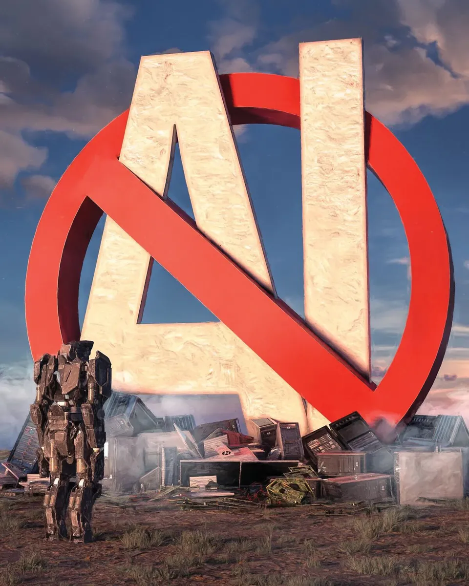

Recent Blog Post

Negative aspects
While artificial intelligence (AI) has shown tremendous potential and benefits, there are also concerns and negative aspects associated with its development and implementation

behind the industries
Artificial Intelligence (AI) has emerged as a transformative force, revolutionizing industries and enhancing our daily lives. However, behind the facade of innovation lies a darker side—a realm of concerns and challenges that need careful consideration